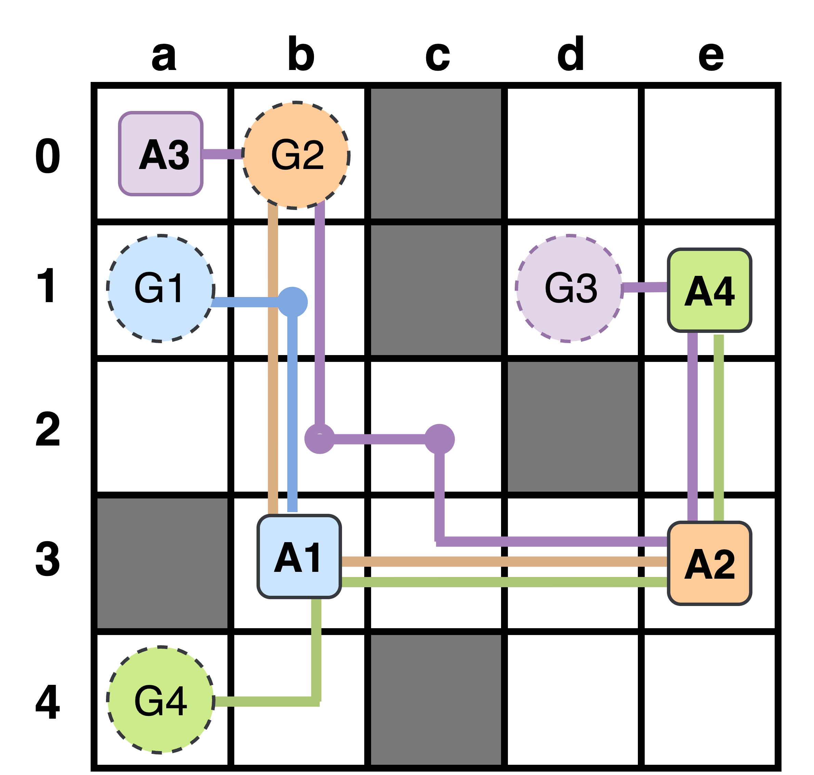

Problem Setting
MAPF Requires Explanations
MAPF computes coordinated multi-robot motion effectively, yet the causal basis of replanning decisions often remains opaque to human operators.
Operational accountability
Conflict-driven replanning
Human oversight
Joint execution in shared space
Multiple agents follow coordinated trajectories toward distinct goals on the same grid.
Conflict resolution revises behavior
Safe execution may introduce waits, detours, or revised subplans that were not present in the original plan.
Operators require traceable reasons
An explanation must identify which conflict occurred, which agent was affected, and why the resulting behavior changed.

Figure 1. Representative MAPF instance with obstacles, interacting trajectories, and conflict-prone motion on a shared grid.
Conventional planner outputs expose final paths, but they rarely preserve the semantic rationale for revision that links a specific conflict to the resolved behavior.
maPO · AAAI 2026 MAKE
03 / 15